RTR: Imperium Surrectum
RTR: Imperium SurrectumNative Anatolians, part 1
2023-09-01 · Tarnholm
Welcome to our first dev diary on the native Anatolian factions! After introducing all these Greeks, it is time to remind you that there were still many non-Greek cultures around Asia Minor during the Hellenistic period, even though most were Hellenised. To give you an overview, here is a map of the area in antiquity - forgive us for the Latin descriptions, but this is the best map available:
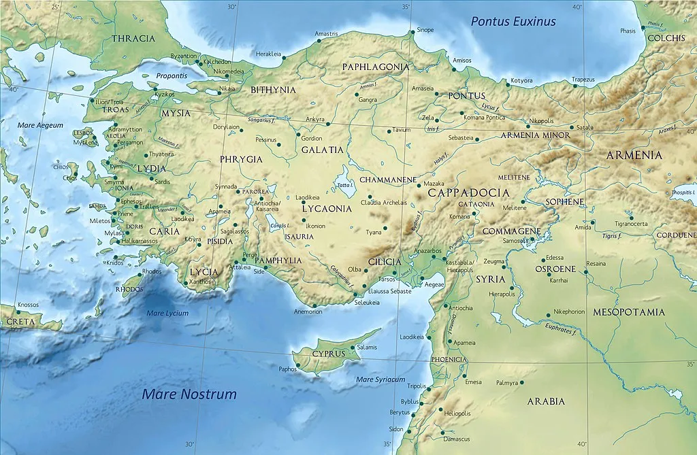
For 060, we will focus on the western half and the northern and southern coasts of Asia Minor, while the more Iranian east of the region will be worked on in more detail later. Let us start nearest to Greece, in the southwest of Anatolia, with the CHRYSAORIAN LEAGUE of the Carians. First, a word on the name because you may wonder why our Carian faction is not called Caria or Carians. "Chrysaor" meant "the one with the golden sword", and this was the Carian name for Zeus in Stratonikeia, where the federal temple of the Carian League, a religious federation of all Carians, was located. Hence, Chrysaoria was also used as a secondary name for Caria, and in mythology, there was also a hero called Chrysaor, the brother of the famous Bellerophon, who was supposed to be the founder of Caria. Primarily, the Carians revered Zeus, however, who also had a second, equally important sanctuary in Labraunda, a few kilometres north of the old capital of the region, Mylasa.
The double axe of Zeus Labraundos, the Labrys (Plutarch claims Labraunda was named after the axe), was the sacred symbol of the Carians, and they also appreciated the Labyrs and other axes in battle. Together with the drepanon, a scythe-like melee weapon, they differentiated Carian warriors from Greeks, with whom they had close contacts early on. According to Herodotus, the first mercenaries ever were Ionian Greeks and Carians in Egypt around 600 BC. The father of history, himself born in the Dorian colony Halikarnassos in coastal Caria, adds that the Carians invented handles on shields and the practice of painting shields and putting crests on helmets. Though it is doubtful if this is true, it certainly speaks for the Carians' reputation in warfare. At the same time, mercenaries were also expendable: Polybios later wrote that if a situation on a campaign seemed dangerous, one would "send the Carians" - this became a common proverb among Greek officers.
Caria had been settled since the Bronze Age but never formed a united political unit. Intensive political, military, economic, cultural and religious contacts between Greeks and Carians shaped both groups throughout the centuries, and these persisted even when Caria fell first under Lydian and then Persian rule in the 6th century BC. Carians fought for and with Miletos during the Ionian Revolt (499-494 BC), and the local ruler, Artemisia I, impressed Xerxes with her bravery at the battle of Salamis in 480 BC - a scene made famous by the poor sequel of 300, where Artemisia is played by Eva Green. Artemisia II, the wife and sister of Mausolos, the mightiest satrap of Caria, is more important and generally well-known. Under his rule in the mid-4th century BC, the satrapy of Caria became one of the richest and most influential in the whole Achaemenid Empire, with various Greek cities, Rhodes and Lycia falling under Mausolos' rule and other regional powers like Chios or Kos accepting his hegemony. Mausolos Hellenised the Carians and carianised the Greeks in his lands, and he moved the capital from inland Mylasa to the thriving port of Halikarnassos. Here, he began the construction of the gigantic Mausoleum, named after him, one of the seven wonders of the ancient world. Many buildings since have been called mausoleums, and many structures have emulated the original architectural design - the house of the temple in Washington, D.C., would be one example.
Mausolos was part of the Hekatomnid dynasty, which began with Hekatomnos in the late 5th century BC but may have been connected to Artemisia I. After Mausolos' death, his sister Artemisia II succeeded him, finished the construction of the Mausoleum and defended his realm against Rhodian attacks. Several decades later, when Alexander the Great came to Halikarnassos, Ada, the last of the Hekatomnids, proclaimed Alexander's aunt and received his support (even though the claim was nonsense). After Alexander's campaigns, however, Caria passed into the hands of various diadochi before ending up under Ptolemaic control. They ruled the region mostly indirectly, with only a few garrisons here and there. The Chrysaorian League, as a religious and loose political federation, bound Stratonikeia, Alabanda, Alinda, Amyzon, Mylasa, Kaunos and other Carian cities together and was open to Ptolemaic influence. At the end of the 3rd century, Antiochos III and Philip V conquered Caria for the Seleucids and Antigonids, respectively. Still, they retained the league and arbitrated in its conflicts with the polis of Mylasa. Alabanda was even renamed "Antiocheia of the Chrysaorians" by Antiochos, and his general Olympichos established a semi-independent fiefdom in Alinda. After the victory of Rome, Pergamon and Rhodes at Magnesia in 190/189 BC, the region was given to Rhodes, and the Rhodians attempted to control Caria directly. The Carians seemingly utilised the Chrysaorian League for conspirative meetings, however, and started a revolt, which eventually won acknowledgement from the Senate and led to the liberation of most of Caria in the late 170s and early 160s BC. Even when the Rhodians defeated Mylasa and Alabanda decisively, the Romans did not allow them to keep their gains - not least because Alabanda had sent its cavalry to support the Roman campaigns in Macedon.
Even after Caria had finally gained independence, the Chrysaorian League did not form a political alliance. It continued into the imperial period, when Aphrodisias, the latest famous Carian cult centre, received much attention from Augustus. Still, the individual poleis and communities instead favoured to remain autonomous from each other most of the time. In RIS, this may, of course, change: The Chrysaorian League can spawn during your campaign and possibly unite Caria, but in truth, it is more likely that Caria will often be split between the Chrysaorians and a host of foreign powers - just like in history.
The Greek theater of Halikarnassos, built by Mausolos in the mid 4th century BC:
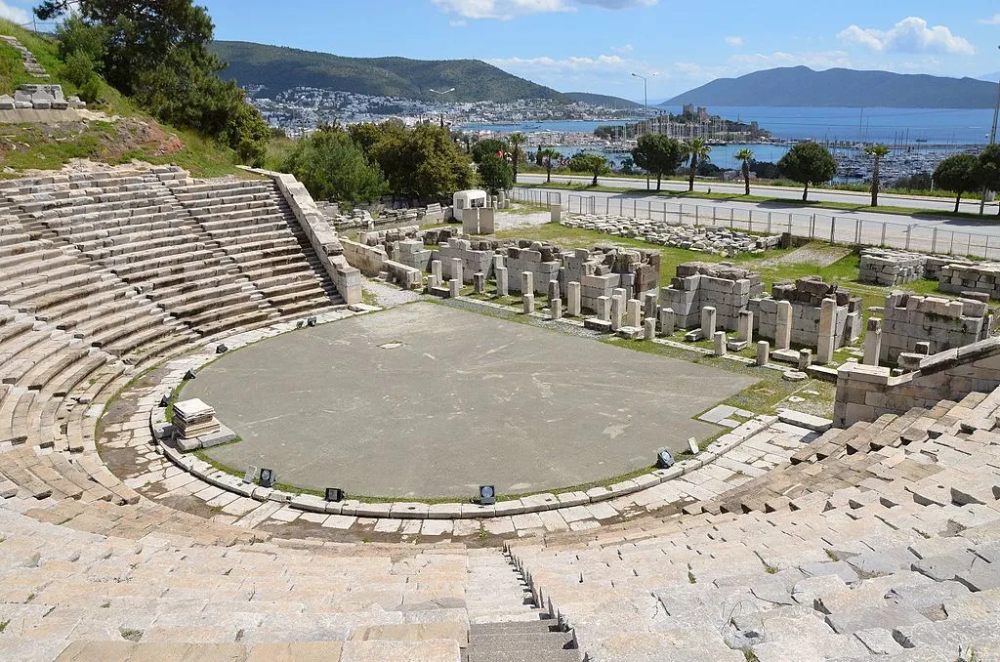
House of the temple, Washington, D.C., modelled after how the Mausoleum of Halikarnassos was imagined (it looks like that in RTW):
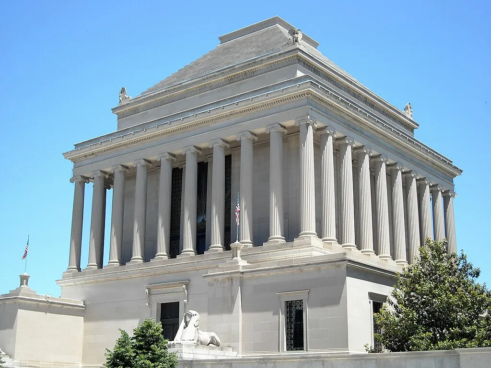
Bellerophon, brother of Chryasor, and Pegasos on a relief from the Sebasteion (temple of Augustus), Aphrodisias:
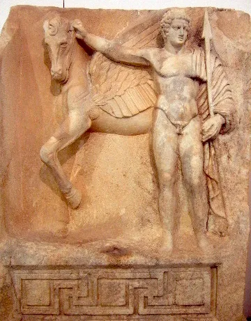
The sphinx that guarded the temple of Zeus Labraundos, Labraunda:
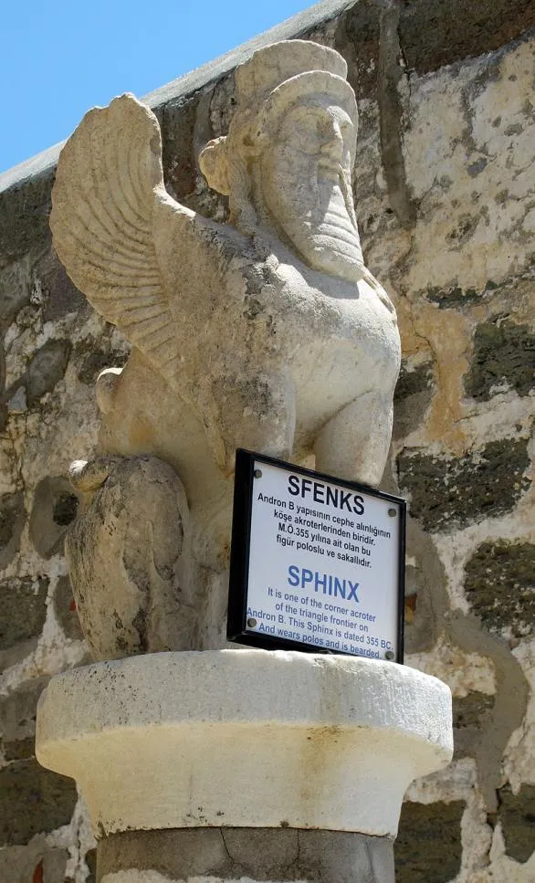
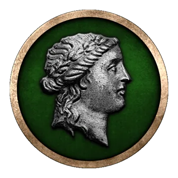
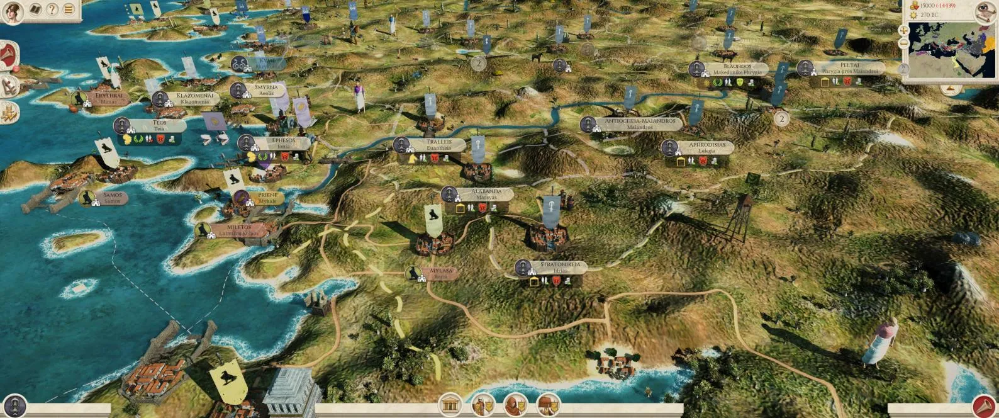
Karian Light Infantry:
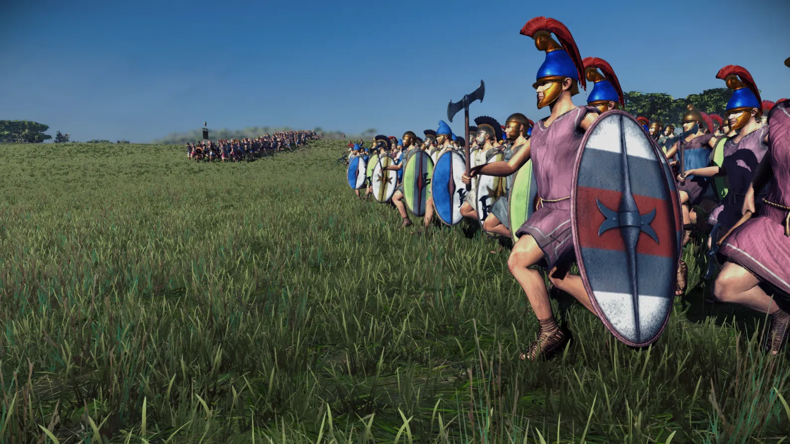
Karian Heavy Infantry:
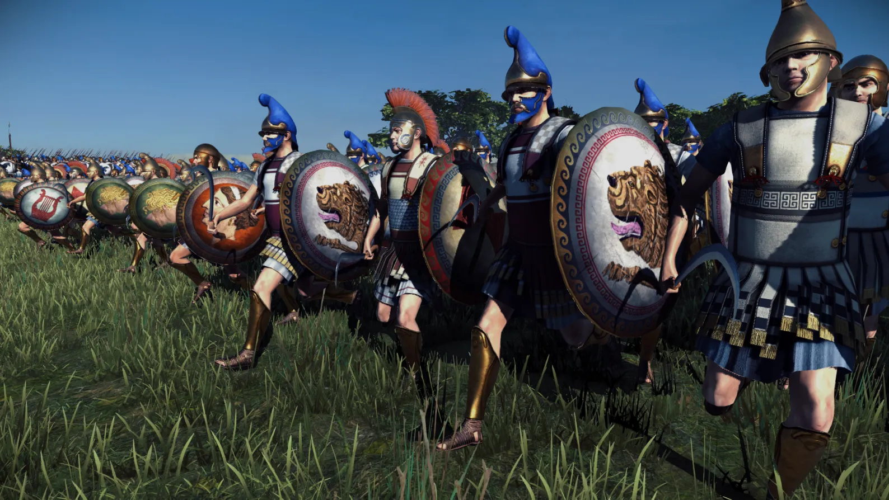
From Caria, we move eastwards to neighbouring LYCIA and the LYCIAN LEAGUE. Like the Carians, they initially spoke a Luwian language, traced back to the Bronze Age, during which a Lycian kingdom is already attested. As players of Total War: Troy - or avid readers of the Iliad - will doubtlessly know, King Sarpedon of Lycia led a sizeable contingent of his men to the defence of Troy. Sarpedon fought bravely but was eventually killed by Patroklos. Like their Carian relatives, the Lycians were accordingly known as renowned warriors and became famous mercenaries. There were also connections with the Greek world from the earliest times on. Though the Persians conquered Lycia in the late 6th century BC, its local dynasts took advantage of the Greek victory during the Graeco-Persian Wars and became allies of the Athenians. The rulers of Xanthos dominated the region, and their monumental graves can nowadays be seen in the British Museum (surprise, surprise). In the 370s BC, Perikles of Limyra challenged the supremacy of the Xanthians and declared himself king of Lycia, thereby causing the Great Lycian War. After besieging Telmessos and Phaselis, Perikles was able to secure half of the Lycian Peninsula. However, there is always a bigger fish: During the Great Satrap Revolt against the Great King of Persia (366-360), both Perikles and the Xanthians failed to realise their goals and, when the revolt collapsed, were forced to accept the overlordship of Mausolos of Caria (r. 377-353 BC). The Oeconomica (Oikonomika), a work often ascribed to Aristotle, preserves a rather hilarious anecdote from this period:,, Noticing that the Lycians were fond of wearing their hair long, Kondalos, a governor under Mausolos, pretended that a dispatch had come from the king of Persia ordering him to send hair to make false fringes and that he was therefore commanded by Mausolos to cut off their hair. He, therefore, said that if they would pay him a fixed poll tax, he would send for hair to Greece. They gladly gave him what he asked, and a large sum of money was collected from many of them.” (Ps.-Aristot. Oec. 1348a, l. 28-34) After the end of the Hekatomnid dynasty in the late 4th century BC, Lycia passed first into the hands of Alexander and then those of the Ptolemaic Kingdom before it was conquered by the Seleucid king Antiochos III the Great in 197 BC. In the treaty of Apameia in 188 BC, the Seleucids had to cede Lycia to Rhodes, but the Lycians violently resisted their new overlords. Already in the 180s BC, the Lycian Poleis formed a league with its own laws, council and assembly, which remained autonomous until 43 AD. At that point, Emperor Claudius incorporated it into the province of Lycia. Yet, the Lycian League continued to exercise political, religious, economic and ceremonial functions until at least the 3rd century AD, possibly the 7th. Like the Carians, the Lycians used the scimitar like drepanon but were also avid archers. Herodotus describes their marines and bowmen, while the Lycian drepanophoroi and Hoplites appear on various tower-like tombs. Their unique talents made the Lycians, like the Carians, highly sought after, especially during the Hellenistic period. In the Ptolemaic kingdom, they were essential garrison troops all over the Aegean and the Eastern Mediterranean. It remains to be added that while tower tombs were reserved for the princes of Lycia, many nobles were buried in rock-hewn graves, which are still a sight to behold today. Lycia was a country with unique warriors, and it will provide a particular challenge in the RIS campaign.
The rock graves of Myra:
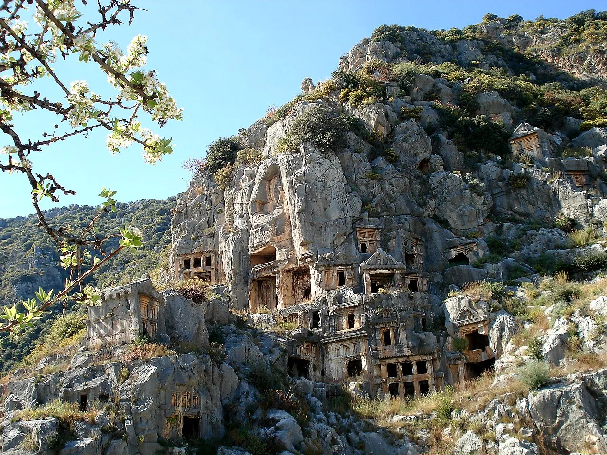
Payava of Xanthos (ca. 400-350 BC) and one of his generals on the former's tomb :
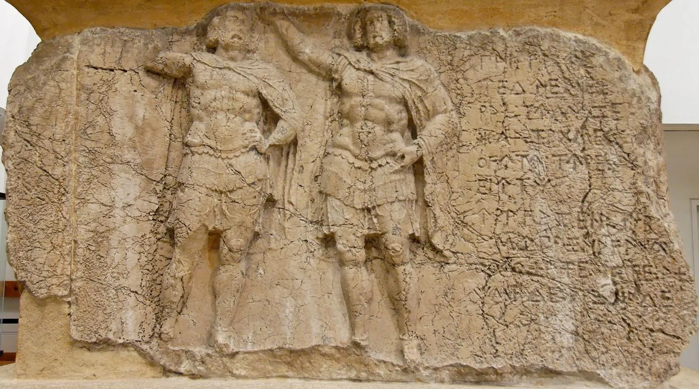
Nereid Monument, Xanthos, Lycia (British Museum):
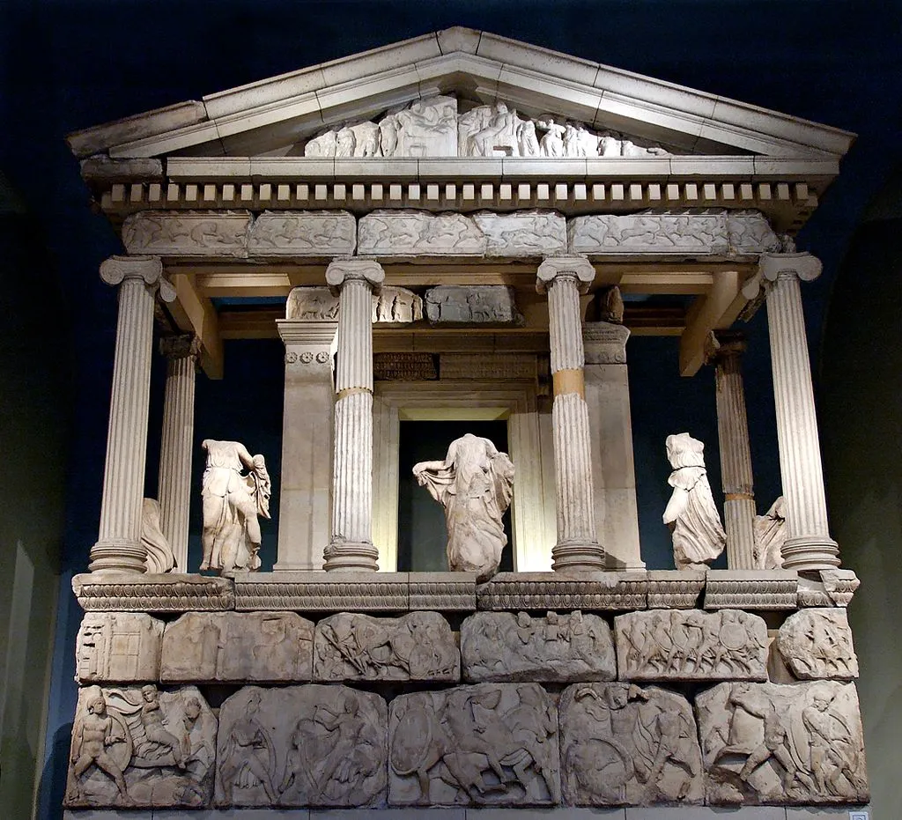
Main Street of Patara:
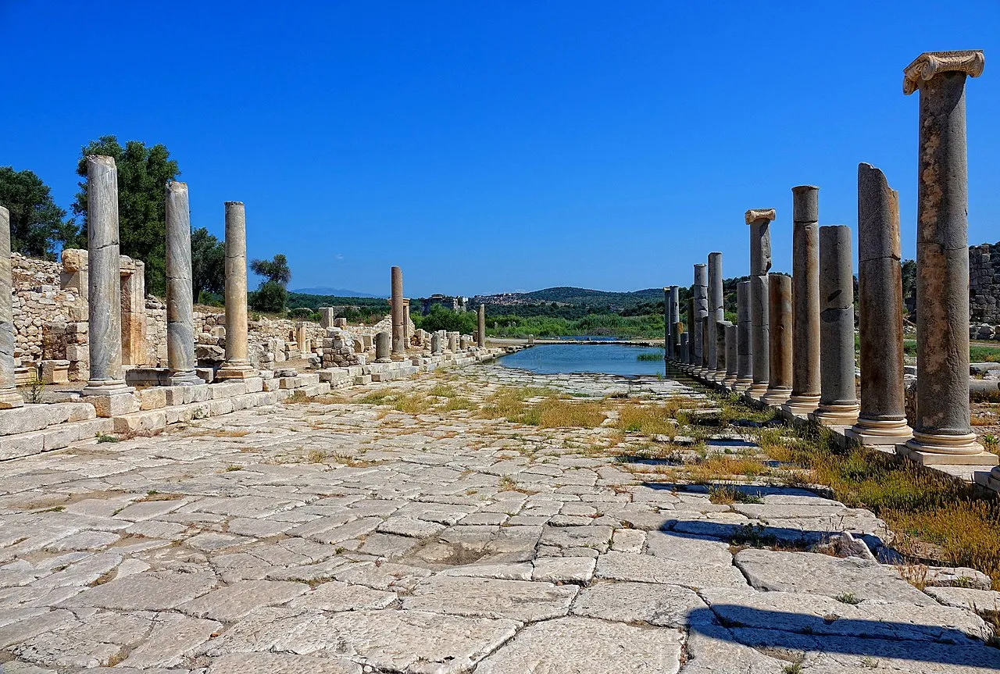
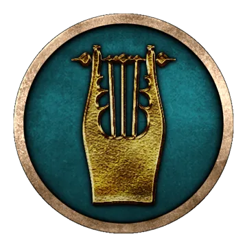
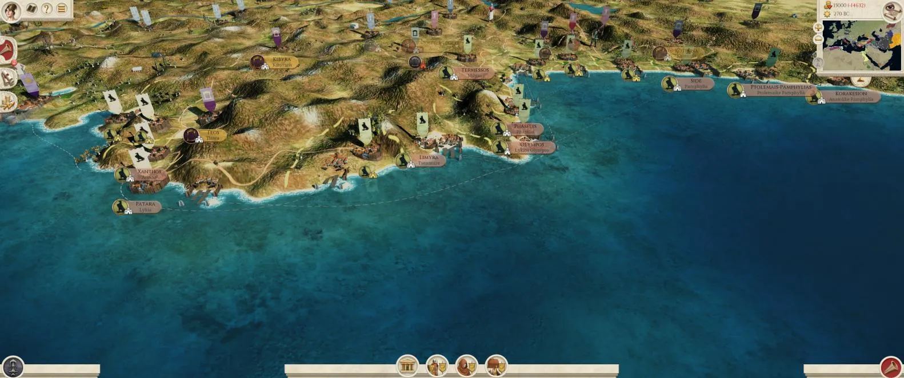
Lycia is a revolt tag and thus doesn't start with any cities.
Lycian Drepanophoroi:
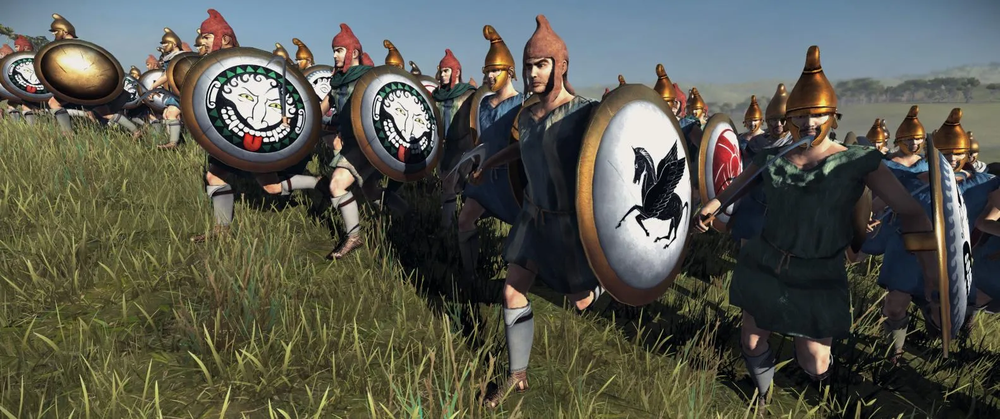
Lycian Marines:
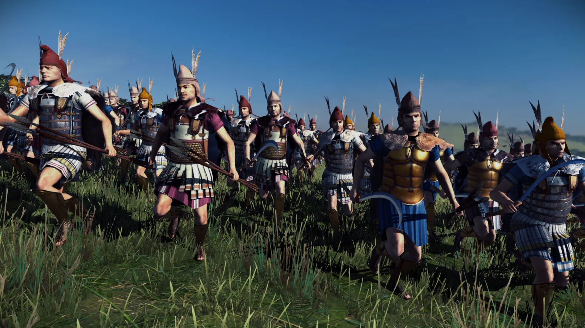
Lycian Hoplites:
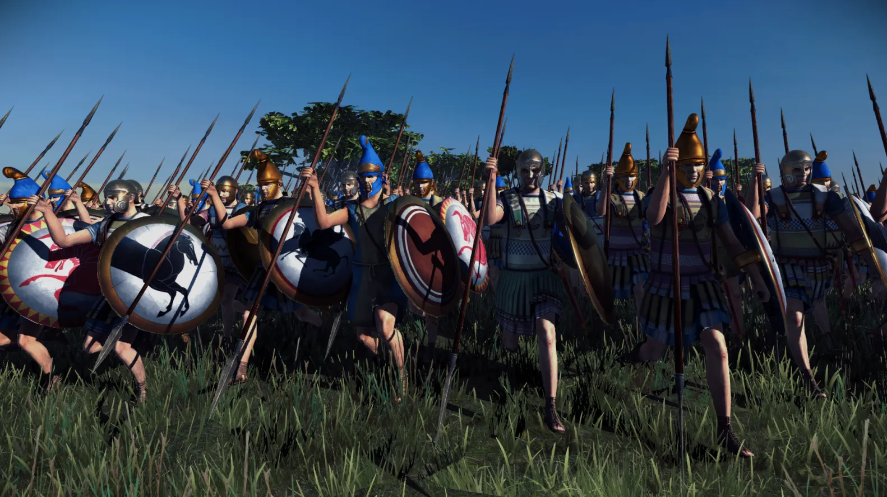
Lycian Archers:
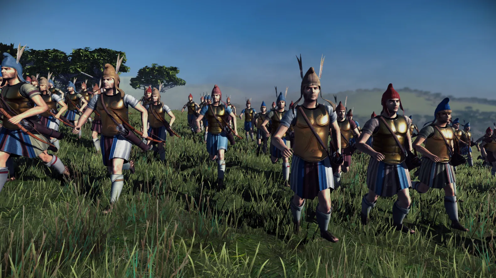
Our third faction is SELGE in Pisidia. Selge was a major city on a fertile plateau 1000m over the Mediterranean Sea. Its inhabitants grew olives and wine and collected styrax, a resin material similar to incense that was exported to Egypt. Strabo of Amaseia, who wrote a geographic description of the world in the time of Augustus, was clearly impressed by Selge's natural, political and military strength:
"Selgê was founded at first by the Lakedaimonians as a city, and still earlier by Kalchas; but later it remained an independent city, having waxed so powerful on account of the law‑abiding manner in which its government was conducted that it once contained twenty thousand men. And the nature of the region is wonderful, for among the summits of the Taurus, there is a country which can support tens of thousands of inhabitants and is so very fertile that it is planted with olive in many places and with fine vineyards and produces abundant pasture for cattle of all kinds; and above this country, all round it, lie forests of various kinds of timber." (Strab. 12.7.3C570)
It was also famous for the Selitian Oil, a popular medicine, similarly praised by Strabo and Pliny. All these exports would have made the Selgians a vibrant community, and by the 4th century BC, they started to convert this wealth into political power. When Alexander the Great advanced through the area on his conquest of the Persian Empire, Selge preserved its autonomy by establishing friendly relations with the king. As Strabo emphasises: "The region around the city and the territory of the Selgians has only a few approaches since their territory is mountainous and full of precipices and ravines, which are formed, among other rivers, by the Eurymedon and the Kestros, which flow from the Selgic mountains and empty into the Pamphylian Sea. But they have bridges on their roads. Because of their natural fortifications, however, the Selgians have never even once, either in earlier or later times, become subject to others, but unmolested have reaped the fruit of the whole country except the part situated below them in Pamphylia and inside the Taurus, for which they were always at war with the kings." (Strab. 12.7.3C571)
These kings were the Seleucid and, later, the Attalid monarchs. The first significant war occurred in 218 BC when Selge attacked the city of Pednelissos. At the time, the pretender Achaios (reigned 221-213 BC) controlled most of Seleucid Asia Minor west of the Taurus mountains. He had reduced the Attalid kingdom to a local power again and was the protector of Pednelissos. Upon hearing the news, he duly dispatched 6000 infantry and 500 horse riders to relieve Pednelissos. The Seleucid commander Garsyeris called upon all Pisidian and Pamphylian cities free from Selgian rule to support him and received 8000 Hoplites from the Etennians and 4000 men from Aspendos. This force initially suffered severe losses but eventually broke the siege of Pednelissos. Polybius reports that the Selgians and their allies lost 10 000 men in this battle, which shows they must have had a very sizeable army at their disposal. Yet, many allies deserted the Selgians after the defeat, and Garsyeris proceeded to besiege the city. The Selgian council appointed Logbasis to open negotiations with the Seleucid commander. Still, Logbasis was far more interested in gaining the favour of Achaios and offered to betray the city if the king himself should show up. Achaios agreed and ordered Logbasis to call the Selgians to a council, during which he would attack. A goat herd, however, noticed the Seleucid soldiers when they tried to climb the walls, and the Selgians immediately realised what was happening. They killed Logbasis on the spot and then charged the Mysian mercenaries Garsyeris was commanding. When 700 of them had been slain, Achaios decided to stop the attack and retreat.
The Selgians made a truce and agreed to pay 700 talents to Achaios and the Aspendians. Polybios concludes: "Thus the Selgians, after nearly losing their country owing to the impious treachery of Logbasis, preserved it by their own valour and disgraced neither their liberty nor their kinship with the Lakedaimonians." (Polyb. V, 76, 11) \n\nAfter these events, Selge worked hard to regain its former position and probably made good use of the death of Achaios in 213 BC and the campaigns of the victor, Antiochus III, in the East. When Antiochus was defeated by Romans and Attalids at Magnesia in 189 BC, the Romans gave the territory of Selge to Eumenes II (r. 197-159 BC), the king of Pergamon. The Selgians were far from submitting under Eumenes and lodged an official complaint in Rome. In the 160s BC, Eumenes assembled his forces and campaigned against the Selgians to subjugate them (Thonemann, Attalid Asia Minor 2013, 54). Still, the mention in the sources of a second war against Selge by his successor Attalos II (r. 159-138 BC) in the 150s BC casts doubt on how successful the first one was. When Rome inherited the Attalid kingdom, the senate decided not to try and annex Selge and later put it under the official authority of Amyntas of Galatia (r. 36-25 BC). In imperial times, Selge continued to flourish and grow.
The theatre of Selge:
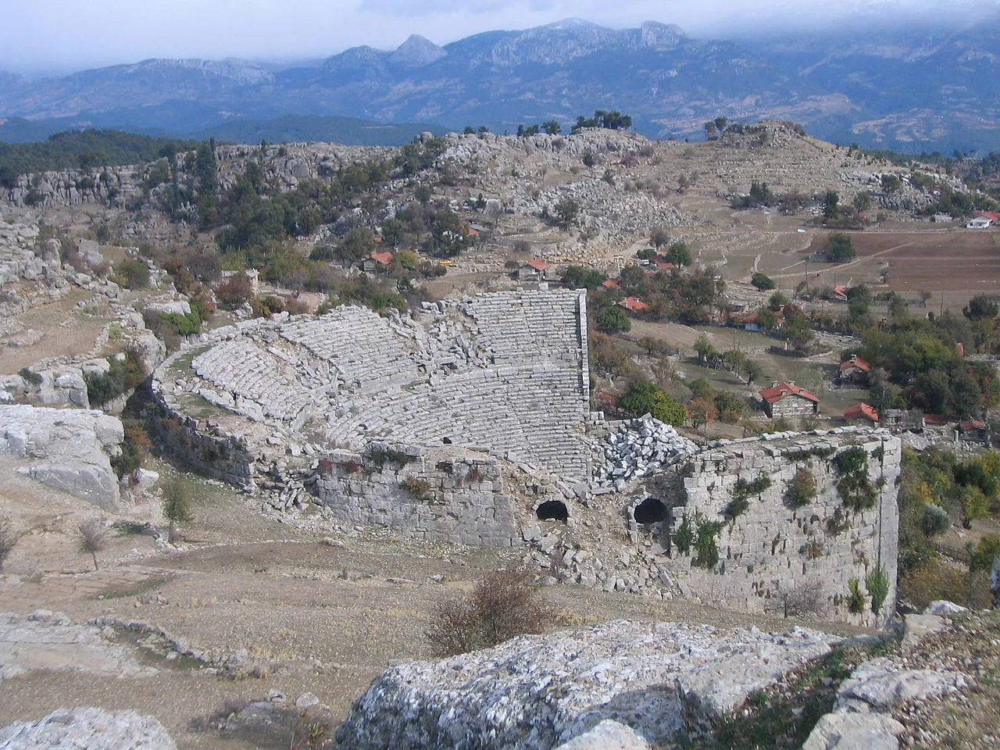
Its famous slingers on a coin of Selge, 325-250 BC (two wrestlers left):
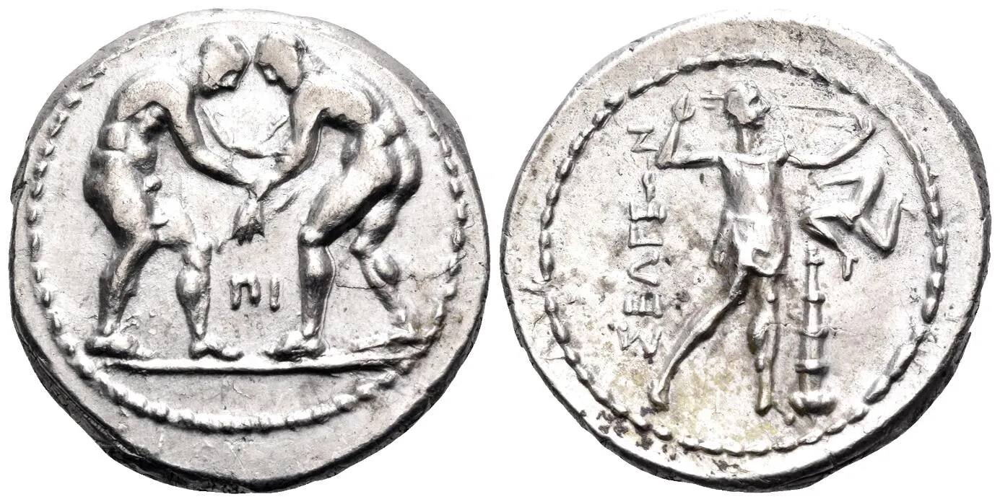
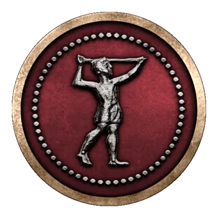
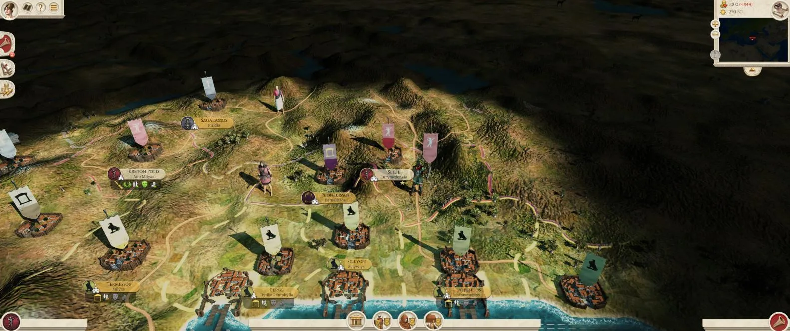
Pisidian Javelinmen:
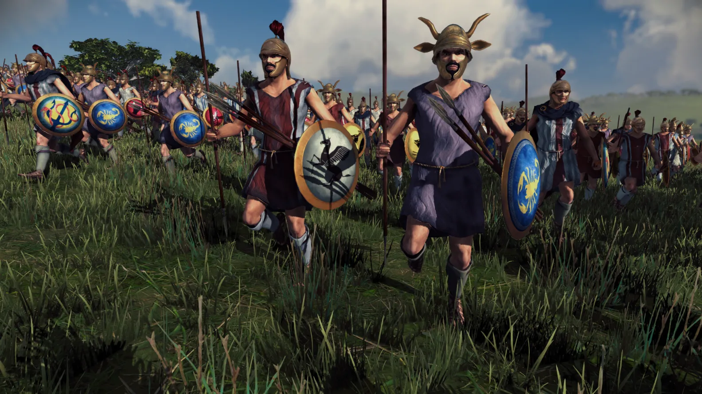
Pamphylian Heavy Javelinmen:
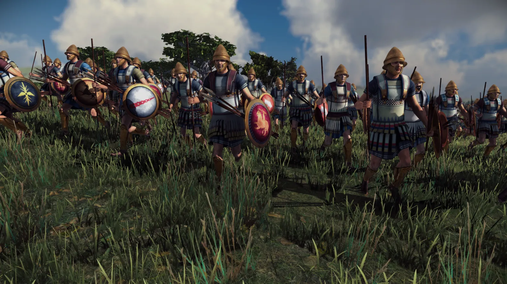
Pisidian Thureophoroi:
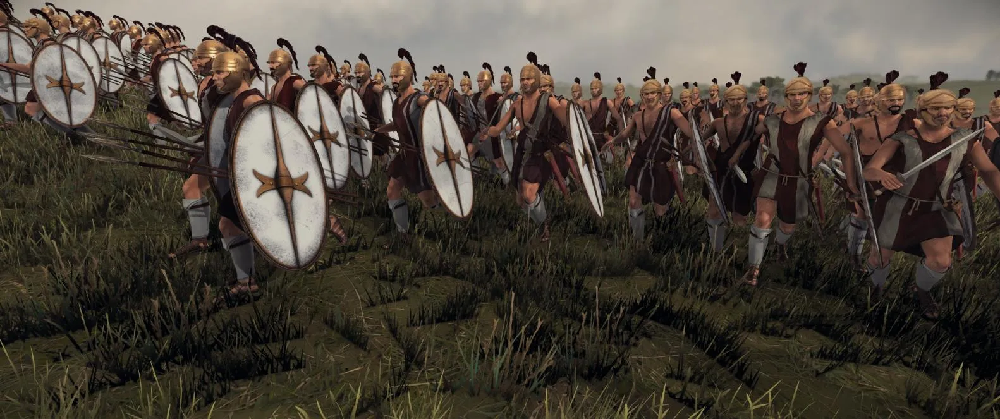
Etennian Hoplites:
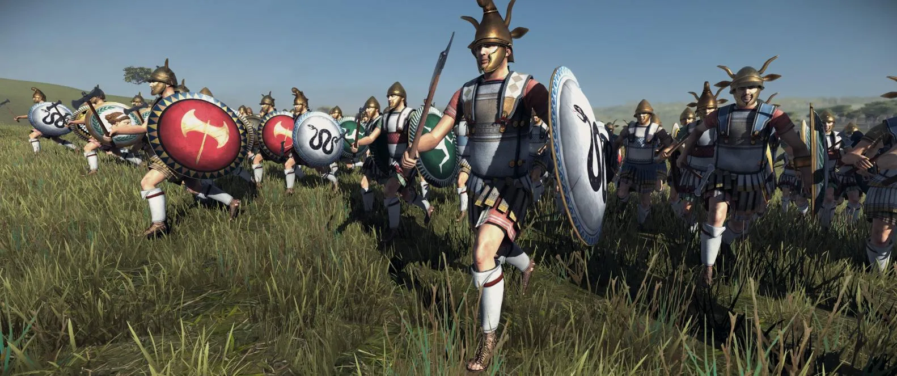
Selgian Slingers:
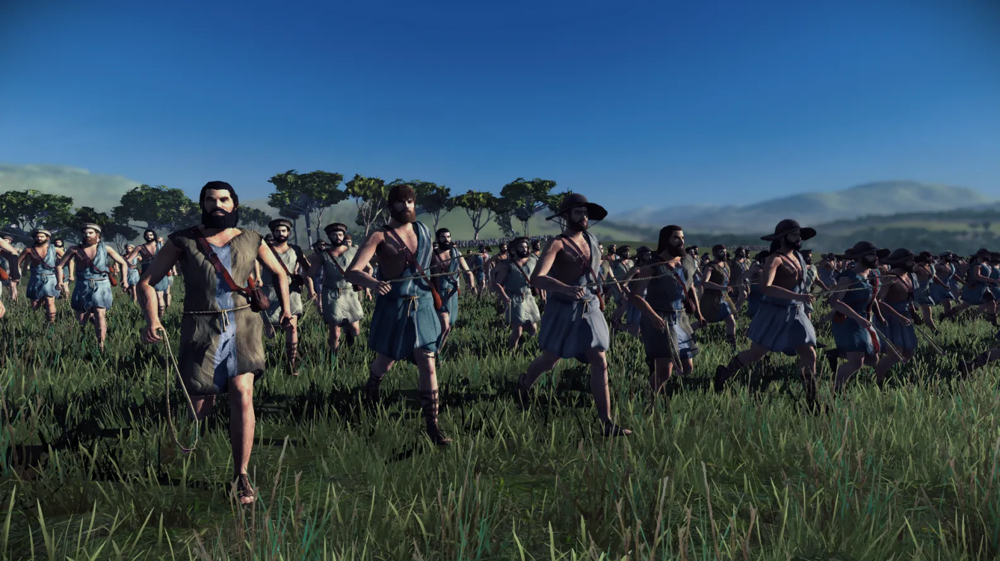
Hopefully, you all enjoyed this first peek into some of the minor natives in Anatolia. We will be back soon with part two of our native Anatolian factions. Leave a comment in a channel. What unit were your favourites and who can't you wait to conquer?